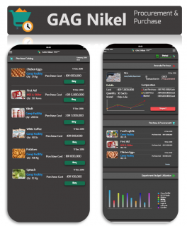
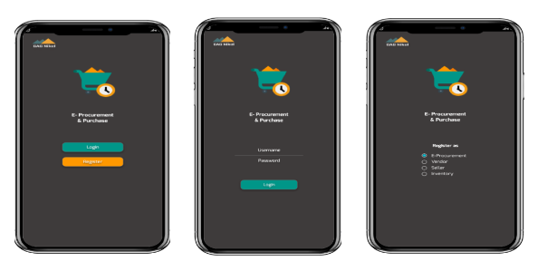

.png)
Background
GAG Nikel E-Procurement and Purchase is another example project that we also have capability to handle ERP system. It helps GAG Nikel employee to manage vendor management system, It helps procurement staff to create order, buy things and view inventory from their data. This App will also help procurement staff provide availability of logistic stock for other GAG Nikel staff.

Objective
To achieve services, optimization, and efforts to improve ICT implementation better, then one example of the best step is to improve and optimize network infrastructure. Network infrastructure development is not impossible, it can even be done regularly. Therefore, the procurement process has not been recorded at PT. Nikel GAG requires companies to implement an online procurement system (E-Procurement) and structured according to the required procurement system

A large-scale company must be wiser in handling procurement problems to a company's needs, both food and infrastructure needs, in order to avoid undesirable things such as KKN, and other negligence. Therefore, the best aspects for the company from running this application are as follows:
1) Increase the value (value / quality) of the company
2) Facilitating the procurement process
3) Make data transparency so that it can be neater not to happen data redundancy
.png)
As a mobile Application, GAG e-Procurement need the transactional data. Here we describe some basic data transactions that occur on GAG e-Procurement Applications :